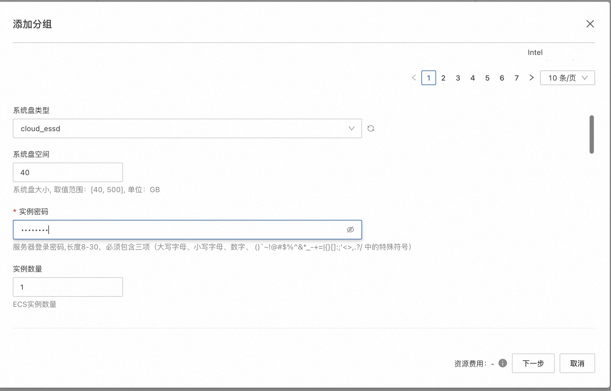
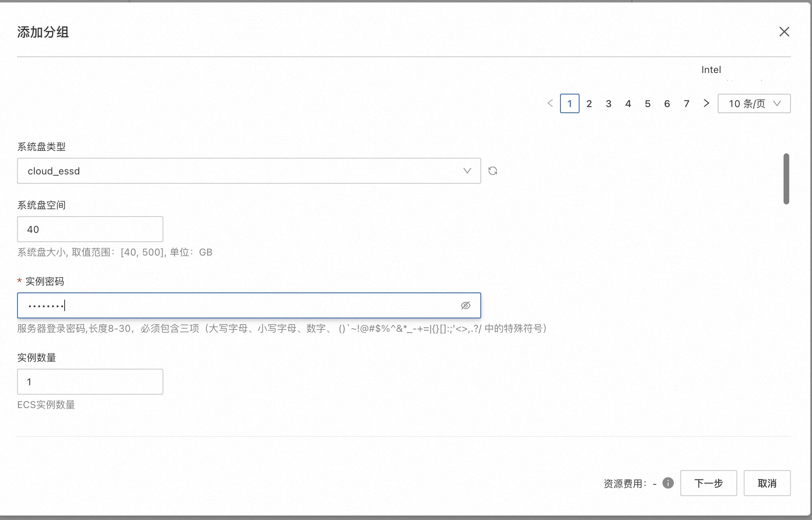
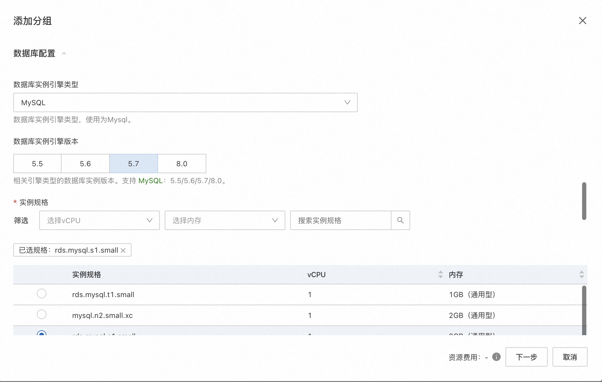
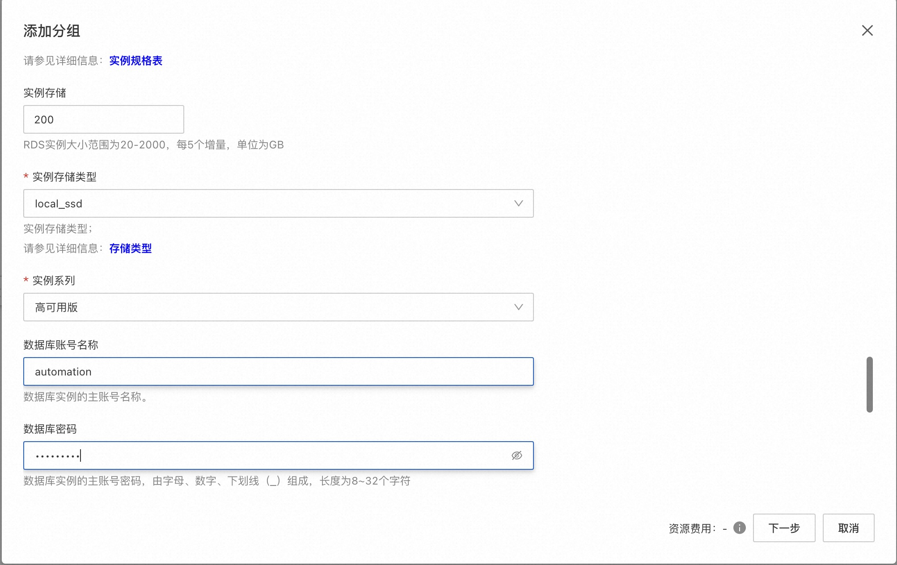
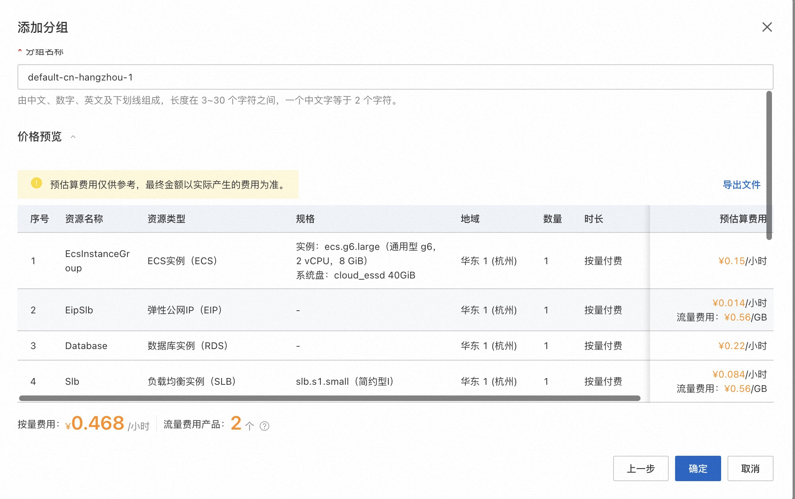
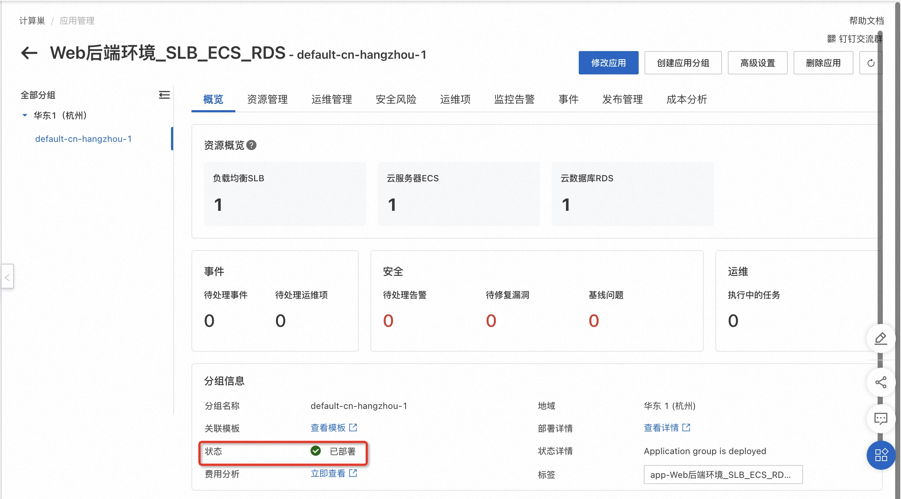

环境部署-创建Web后端环境(SLB+多台ECS服务器+RDS)的说明文档
概述
此应用模板提供了一个基于ECS弹性伸缩组、负载均衡器和数据库的Web后端环境的方案，是一种常见的生产环境高可用服务部署方式。部署此应用时， 用户只需要输入ECS实例密码等少量参数，即可一键部署支持负载均衡和弹性伸缩的Web后端环境。
部署完成的应用分组包含一个或多个ECS实例、一个RDS实例、一个SLB实例和一个弹性伸缩组。 - ECS实例自动加入SLB后端服务器组和弹性伸缩组。 - ECS实例的Ip自己加入到RDS实例的安全白名单中 - 默认创建的弹性配置不会进行自动伸缩。 - SLB实例绑定弹性公网IP提供公网服务，ECS实例不开公网提高安全性。 - 弹性伸缩组与SLB实例关联，伸缩组中新增的实例会自动加入SLB后端服务器组，也会自动加入应用分组。
待应用部署完成后，您会获得一套包含数据库、支持负载均衡和弹性伸缩的ECS集群环境，您可以按需求修改应用： - 您可在创建的ECS实例中部署您的软件，推荐在"发布管理"中设置流水线，实现代码的持续集成和持续部署。 - 您可以自行修改SLB的监听配置，比如监听端口、会话保持等等。 - 您可以在应用管理的运维管理页面对伸缩组进行扩缩容，也可以将伸缩配置改为自动伸缩。 - 您可以在数据库实例中设置您的数据表 - 软件部署成功后，访问SLB实例绑定的弹性公网IP即可访问服务。
计费说明
部署此应用的费用主要涉及：
- 所选vCPU与内存规格
- 磁盘容量
- 公网带宽
- 所选SLB规格
- 所选数据库的规格
计费方式包括：
- 按量付费（小时）
- 包年包月
预估费用在部署前可实时看到。
RAM账号所需权限
若您使用RAM用户创建应用，为了使用应用管理的完整功能，需要对使用的RAM用户的账号添加相应资源的权限。添加RAM权限的详细操作，请参见为RAM用户授权。
为了部署此应用，所需权限如下表所示。
| 权限策略名称 | 备注 |
|---|---|
| AliyunECSFullAccess | 管理云服务器服务（ECS）的权限 |
| AliyunVPCFullAccess | 管理专有网络（VPC）的权限 |
| AliyunROSFullAccess | 管理资源编排服务（ROS）的权限 |
| AliyunCloudMonitorFullAccess | 管理云监控（CloudMonitor）的权限 |
| AliyunESSFullAccess | 管理弹性伸缩服务(ESS)的权限 |
| AliyunSLBFullAccess | 管理负载均衡服务（SLB）的权限 |
| AliyunRDSFullAccess | 管理云数据库服务(RDS)的权限 |
部署流程
访问应用管理
应用管理可以从三个入口访问：
部署步骤
- 访问应用管理控制台，点击“创建应用”后选择“通过模板创建”，再选择“环境部署-创建Web后端环境(SLB+多台ECS服务器+RDS)”模板，点击“使用模板”
- 输入应用名称、应用描述后，点击“添加分组”
- 输入部署参数，保存分组。保存前可以预览费用明细和参数。
- 设置分组地域和分组名称，选择付费模式

- 选择ECS的相关配置
 
 - 选择SLB的相关配置

- 选择数据库的相关配置  
- 选择可用区和网络配置
- 预览费用明细和参数 
- 设置分组地域和分组名称，选择付费模式
- 输入应用高级设置后，点击创建
部署参数说明
您在创建应用分组的过程中，需要配置相关信息。下文介绍该应用模板输入参数的详细信息。
| 参数组 | 参数项 | 示例 | 说明 |
|---|---|---|---|
| 付费类型配置 | 付费类型 | 按量付费 或 包年包月 | |
| ECS配置 | 实例类型 | ecs.g6.large | 实例规格，可以根据实际需求选择 |
| ECS配置 | 系统盘类型 | cloud_essd | |
| ECS配置 | 系统盘大小 | 120GB | |
| ECS配置 | 实例密码 | 登录密码 | |
| SLB配置 | 规格 | slb.s1.small | SLB实例规格 |
| SLB配置 | 负载均衡公网带宽 | 1 | 公网带宽 |
| SLB配置 | 后端映射端口 | 80 | 后端映射端口 |
| 数据库配置 | 数据库实例引擎类型 | MYSQL | |
| 数据库配置 | 数据库实例引擎版本 | 5.7 | |
| 数据库配置 | 实例规格 | rds.mysql.s1.small | 实例规格，可以根据实际需求选择 |
| 数据库配置 | 实例存储 | 200 | 实例存储空间，可以根据实际需求选择 |
| 数据库配置 | 实例存储类型 | cloud_essd | |
| 数据库配置 | 实例系列 | 高可用版 | |
| 数据库配置 | 数据库账号名称 | automation | |
| 数据库配置 | 数据库密码 | ||
| 可用区配置 | 可用区 | 杭州可用区K | |
| 网络配置 | 是否新建VPC | 是 | 是否创建一个新VPC |
| 网络配置 | 专有网络IPv4网段 | 192.168.0.0/16 | VPC的ip地址段范围 |
| 网络配置 | 交换机子网网段 | 192.168.0.0/24 | 交换机子网网段 |
| 网络配置 | 现有VPC的实例ID | vpc-xxx | |
| 网络配置 | 现有网络交换机ID | vsw-xxx |
验证结果
- 查看应用。应用创建成功后，环境部署时间大约需要1分钟。状态变为“已部署”即为部署完成 
- 应用分组部署完成后，您可以在"资源管理"标签下看到创建的所有资源。
- 在资源中部署好您的软件，就可以访问您自己的服务了。 注意如果您的服务使用了8080外的其他端口，需要在安全组中放开该端口的入方向访问。在资源管理中可以找到安全组，点击修改安全组规则。
© 2009-2022 Aliyun.com 版权所有